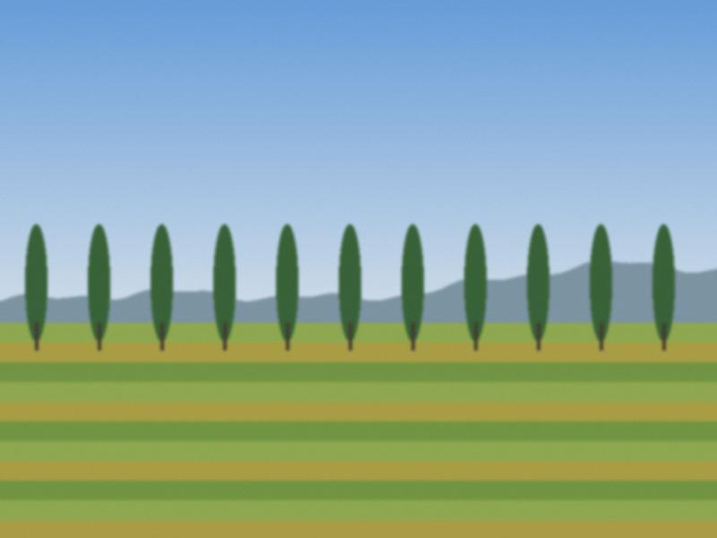

The pickers start at five, before the sun reaches the orchard. Gulnara Kalys, 52, works with her daughters and two nieces on fourteen trees that her husband's grandfather planted. A good picker fills three buckets an hour. A fast one fills four and bruises a fifth of them.
By nine the first crates go to the road. The family has a table under an umbrella, a scale with weights older than the umbrella, and a hand-painted board. Cars from Talas stop, haggle, buy two kilos, eat one before they reach the next village.
"The city people want the big orange ones. The good ones are small and have red cheeks. Nobody listens."
What is not sold by four goes to the drying racks on the roof. Dried, an apricot loses four-fifths of its weight and gains, the family says, its soul. In winter they sell the dried ones at the Bazar-i Kalan, where a kilo costs what a bucket of fresh costs in July.

The drying roofs above the road.At the end of the day Gulnara counts the money twice, wraps it in a handkerchief, and sends the youngest niece to buy ice cream for everybody. That is the only fixed expense of the business.
No Comments
Comments are closed.